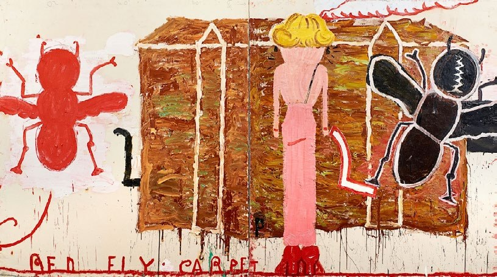
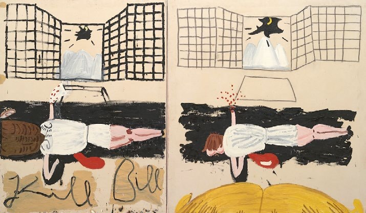
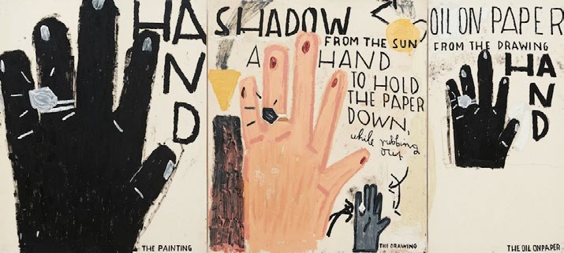
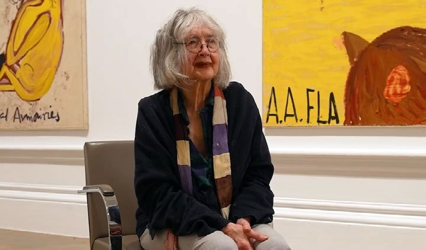

En su pintura del 2017, Park Dogs and Air Raid, aviones de combate vuelan sobre Serpentine Galleries mientras perros retozan en el trasfondo negro. Con su gráfica de estilo infantil, la artista emplea una paleta limitada de azul, negro, blanco y marrón. Una salpicadura amarilla representa un pato. El pasado y el presente se conjugan en la obra: la artista pinta sus memorias de los bombardeos de la II Guerra Mundial en Londres y las combina con la inspiración que le provocó una invitación para exhibir en la galería.
La inesperada yuxtaposición de pasado y presente, luz y tinieblas, son emblemáticas de su extraordinaria y totalmente única obra. Wylie, de 91, es la arquetípica flor tardía. La académica feminista Germaine Greer la llamó la "artista más caliente de Gran Bretaña" en el 2010, cuando solo tenía 76 años. Desde entonces se ha convertido en una certificada estrella del arte global. Rose Wylie: The Picture Comes First en la Real Academia de Londres es su más grande exhibición hasta la fecha. La hace también la primera artista británica —también la primera de su edad— en tener una exposición en las galerías de la histórica institución.
Los temas en las pinturas de Rose Wylie
Las atrevidas y coloridas pinturas de Wylie hacen referencia a todo, desde la historia del arte, el cine, celebridades y las flores en su jardín hasta lo que comió en el desayuno. El tema del sujeto es secundario en los detalles visuales que capturan momentáneamente la vívida imaginación de Wylie.

Black Strap (Red Fly) (2012) es un buen ejemplo. Es una de una serie de pinturas inspiradas en una imagen de Nicole Kidman en la alfombra roja, con un vestido escotado en la espalda, aunque definitivamente no es un retrato. "No fue como que se levantó y pensó 'Quiero pintar a Nicole Kidman'", le dijo la curadora, Katharine Stout, a Artsy. "Simplemente vio una imagen que le pareció impactante de una mujer parada sobre la alfombra roja con un vestido negro escotado atrás que resultó ser Nicole Kidman." Como para recalcar el punto, Kidman está flanqueada por dos moscas gigantescas que vuelan a cada lado de ella.
Wylie a menudo combina elementos de diferentes tiempos y lugares, solo porque "le parece a ella que pueden ir bien juntos", dijo Stout. "No le gusta ser obvia."
El proceso artístico de Wylie
Aunque las celebridades de por sí no tienen ningún interés para ella, las películas la apasionan. Su serie Film Notes, en la que reimagina encuadres específicos, son sin duda las más memorables de su exposición. Sus composiciones a veces imitan la acción de la cámara haciendo acercamientos o capturando la misma escena de diferentes perspectivas como en Kill Bill (Film Notes) (2007).

Wylie a menudo repite sus temas en múltiples canvas. En HAND, Drawing as Central (2022), una serie de tres manos y texto ilustrativo revelan cómo la artista transforma bocetos iniciales en pinturas; los dibujos diarios son la clave de su práctica reiterativa.

"Es una forma de capturar las cosas que le intrigan visualmente, ya sea de una película o de algo que vio en un periódico, y eso se convierte en el terreno fértil de las pinturas", dice Stout. "En el proceso de ver un dibujo y transformarlo en una pintura, ella lo adapta. Las pinturas son a menudo las catalistas de las cualidades esenciales."
El acercamiento simplificado de Wylie a la imagen comparte una afinidad con la de Philip Guston. Así como el pintor de mitad de siglo ha sido llamado 'crudo', la obra de Wylie ha sido designada 'naïve'. Para Stout, esta forma de ver su obra es equivocada, ya que el proceso de Wylie "viene de un sitio de conocimiento en el sentido de que es muy versada en distintos estilos de arte".
Principios de su carrera
Wylie tuvo una educación formal de arte en la Escuela de Arte de Folkestone y Dover en los 1950s. Pero encontró que artistas como Fernand Léger, Giorgio de Chirico y Henri Matisse eran más provocadores que los románticos británicos de la post-guerra que adoraban sus tutores.

Wylie se entrenó entonces para ser maestra en Goldsmiths y allí conoció al artista Roy Oxlade, con quien se casó en 1957. Su trabajo creativo cedió entonces a la tarea de criar sus tres hijos. Aún entonces, visitaba exposiciones, leía constantemente, y acumuló la vasta cantidad de memorias e inspiraciones que luego alimentarían su trabajo.
Cuando sus hijos abandonaron el hogar, Wylie convirtió una habitación en su casa de Kent en un estudio, donde todavía trabaja hoy. También se enroló de nuevo como estudiante de arte en un programa de Maestría del Royal College of Art en 1979 con una tesis en dibujo.
Después, como todos los recién graduados, se envolvió en su trabajo hasta que tuvo su gran 'break'. En el caso de Wylie, ese fue la serie Room Project (2003–04), cuatro trabajos de gran escala que Stout compara a una instalación. "Lo comparo con los tapices medievales, creando su propio mundo," dijo. Y es un mundo juguetón y encantador, con gatos, muñecas de papel, nadadores olímpicos y hasta la propia artista, usando su falda a cuadros favorita. Las pinturas fueron seleccionadas para East International en la Galería Norwich, donde ganaron atención significativa del mundo del arte e impulsaron dramáticamente su carrera.
La carrera tardía de Wylie
En los próximos años, Wylie montó muestras individuales en galerías en New York y Londres. En el 2014, fue seleccionada como Académica Real y ganó el Premio John Moore de Pintura, después de años de competencia por PV Windows and Floorboards (2014). La obra fue inspirada por la descripción del galerista Jake Miller de los pisos y las ventanas victorianas de su galería de Londres.
La práctica fluida de Wylie todavía le deja espacio para explorar la pura alegría de crear. En el 2015 y 2016, creó una serie de pinturas de animales, derivadas simplemente de su imaginación. Mostró algunas de ellas en su primera exposición individual con David Zwirner en el 2016, y la galería anunció su representación de la artista al año siguiente.
"Siempre hay ese sentido del proceso de pintar y que lo que pasa en la pintura determina cuándo está terminada," dijo Stout. "Con esas obras es diferente, porque en ellas abandonó los pinceles y usó sus manos, y se puede sentir esa energía y cualidad tactil en las propias pinturas."
La exposición en la Royal Academy deja claro que Wylie no muestra signos de parar tales exploraciones. Las obras la confirman como uno de los talentos más comprometidos de Gran Bretaña.